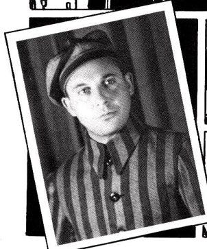

Maus: A Story of A Survivor
By Kaoru Yagi
How does one tell the story of unspeakable horror? For Art Spiegelman, the answer lies in an unconventional medium: the graphic novel. In Maus, Jews and Nazis are portrayed as mice and cats, respectively. This choice critiques racial categorizations, while presenting the Holocaust in a format traditionally associated with lighter, more whimsical tales. The graphic novel allows Spiegelman to bring a complex, deeply personal history to life in a way that combines narrative and visual art, engaging readers emotionally and intellectually.
Maus is a story of a survivor. It is told from the perspective of the comic book writer Art listening to the retelling of the events of his father Vladek’s life. The novel alternates between two perspectives: Vladek’s harrowing experiences as a Polish Jew in World War II, and of his strained relationship with his son Art, in the present day.

What sets Maus apart from other Holocaust stories is its use of animals as an allegorical tool. Jews are depicted as mice, Germans as cats, Poles as pigs, and Americans as dogs. While this might initially seem like a whimsical choice, it serves a critical purpose. It critiques the racial categories and dehumanization propagated by the Nazis, as reinforced by Hitler's epigraph in the book: “The Jews are undoubtedly a race, but they are not human.” This allegorical approach transcends simple caricature and adds layers to the narrative, inviting readers to reflect on the absurdity of such categorizations and their destructive consequences.
Maus is a striking and bold, and inherently human story. Spiegelman’s writing and art is something everyone is able to connect to, yet it is striking nonetheless. One of the biggest examples of this is the theme of survival. Each and every character in the story has the need to live, whether in a war, a concentration camp, or something else altogether. In these extreme circumstances, we can observe characters like Vladek that seem so flawed; a womanizer, a greedy Jew, an old man who victimizes himself at the expense of his family. This complex character is what truly draws us in to the story, instead of an innocent, too perfect victim.
As the story moves forward, the darkness of it also increases. As the focus of the story moves to the events of Auschwitz and Art’s feelings of depression after his success, the story becomes more reflective, emphasizing the lasting psychological toll of the Holocaust. Art’s emotional journey, coupled with his troubled relations with his father, explores the ideas of generational trauma and its tolls. It’s a reminder that the scars of history are not just left on survivors, but are passed down, shaping the identities of those who come after.
In its unique blend of history, allegory, and personal reflection, Maus offers an innovative way to understand the Holocaust’s lasting effects. This graphic novel transcends its medium to tell a universal, deeply affecting story of survival and the enduring legacy of trauma. Art Spiegelman’s memoir is a powerful work that remains relevant across generations, urging readers to reflect on the past and its continued impact on the present.